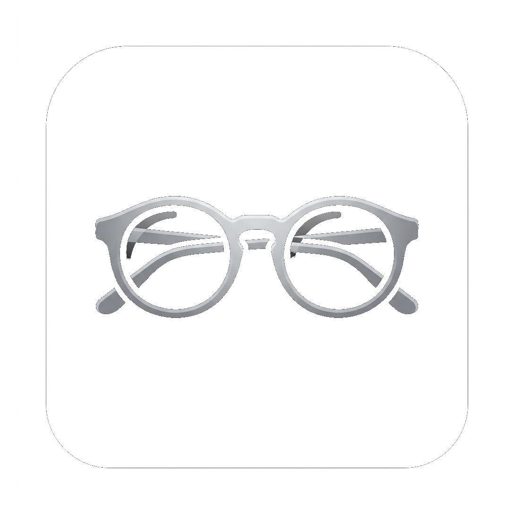

Funes
Funes "el memorioso" es un sistema inteligente de ETL (Extracción, Transformación y Carga) e Ingesta de Conocimiento diseñado para procesar flujos diarios de archivos multiformato desestructurados y volcarlos automáticamente en tu Vault de Obsidian como notas atómicas hiperconectadas ([[WikiLinks]]). Desarrollado para la gestión inteligente, local y privada del conocimiento personal y/o profesional.
🚀 Características Principales
1. Flujo ETL de 4 Etapas
1_entrada/: Carpeta de ingesta continua de archivos volcados en bruto.2_sucio/: Copia de respaldo original para auditoría e integridad.3_limpio/: Transcripción verbatim a Markdown plano (.md).4_salida/: Notas atómicas estructuradas con metadatos e interconexión masiva ([[WikiLinks]])..funes/: Cuarentena (quarantine/) y base de datos vectorial semántica ChromaDB.
2. Soporte Multiformato Extensivo
- Documentos y Tablas: PDF, DOCX, DOC, XLSX, XLS, PPTX, CSV, JSON, HTML, MSG, TXT, MD.
- Formato Académico/Científico: LaTeX (
.tex), TeXmacs (.tm) preservando expresiones matemáticas$math$. - Audio: Transcripción automática local de MP3, WAV, M4A con Faster-Whisper.
- Imágenes: OCR local para PNG, JPEG, TIFF vía Tesseract.
3. RAM Governor (IA Adaptativa Local)
Mantiene una holgura libre del 35% de la memoria RAM para prevenir congelamientos. Selecciona dinámicamente el modelo LLM óptimo vía Ollama:
- RAM ≤ 8 GB:
Qwen 1.5 2B/Qwen 2.5 1.5B - RAM 8 – 16 GB:
Qwen 2.5 3B/Qwen 2.5 7B - RAM 16 – 32 GB:
Qwen 2.5 14B/Command-R 35B - RAM > 32 GB:
Qwen 2.5 32B/Command-R
4. Bucle de Grafo Optimizado (OptimizadoGraphLoop)
Hilo autónomo en segundo plano que re-evalúa notas, inserta enlaces [[WikiLinks]] cruzados y genera/actualiza de forma continua el mapa de contenidos global 4_salida/_Indice_MOC.md.
5. Tolerancia a Fallos y Alta Disponibilidad
- Filtro de Archivos Temporales: Ignora automáticamente archivos temporales de Office (
~$*), descargas en curso (.crdownload,.part), y archivos bloqueados (.tmp,.lock). - Reintentos en Red: Resistencia ante micro-cortes en unidades de red compartidas (
SMB/NFS). - Compatibilidad SQLite: Auto-parche para versiones heredadas de SQLite mediante
pysqlite3. - Aislamiento de Cuarentena: Archivos defectuosos se trasladan a
.funes/quarantine/sin detener el flujo de ingesta.
📦 Instalación y Uso Rápido
Puedes iniciar Funes de forma inmediata usando los scripts oficiales preconfigurados:
- Windows: Haz doble clic en
instalar_funes.bat - macOS: Haz doble clic en
instalar_funes.command
Estos scripts instalarán el entorno virtual, crearán los accesos directos de escritorio (Funes.lnk / Funes.command) y lanzarán la aplicación.
📄 Plantilla de Nota Atómica Generada (4_salida)
Cada archivo procesado genera una nota atómica estandarizada:
--- título: "Título de la Nota" fecha: "AAAA-MM-DD" autor: "Autor" claves: [tema1, tema2] fuentes: [md_sucio_1, md_sucio_2] --- # Título de la Nota ## Resumen Ejecutivo - ¿Qué?: Explicación concreta - ¿Cuándo?: Contexto temporal - ¿Quién?: Entidades o personas - ¿Cómo?: Proceso aplicado ## Problema ... ## Contexto ... ## Objetivo ... ## Método ... ## Ejemplos ... ## Desarrollo ... ## Resultado ... ## Referencias Cruzadas ### Reuniones - [[Reunión_...]] ### Emails - [[Email_...]] ### Conversaciones - [[Conversación_...]] ### Normativa - [[Normativa_...]] ### Otras Notas Atómicas - [[Nota_...]]
🛠️ Nota del autor
Desarrollado por Emilio Sevilla Ortego. No se permite su distribución sin permiso del autor.